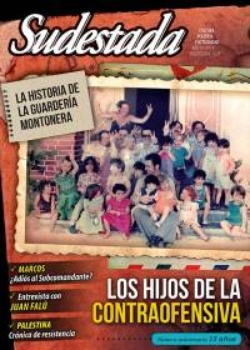

Buscar
Comic under-pop boliviano
El artista Marco Tóxico, nacido de la mística del fanzine, es un explorador de la cultura independiente boliviana con una infinidad de proyectos editoriales, apropiados por la muy creativa comunidad comiquera local.
Edición N° 131
Agosto 2014
Revista bimensual
Comprar edición impresaSumario
- Los hijos de la Contraofensiva
- Preguntas para nunca olvidar
- Trece años
- Fuego y resistencia
- "Toda ocupación genera resistencia"
- "Los músicos que tocan folklore son los más modernos de todos"
- Un adiós que es bienvenida
- Comic under-pop boliviano
- El chispazo que apagó una revolución
- István Mészáros
- Memoria del tiburón
Compartir Articulo
Seguramente su maestra de Jardín de Infantes le mandaría a rehacer las figuras de plastilina, y su señorita de grado le devolvería los dibujos con una sonrisa: "Este brazo está mal, sale de la cabeza". Bestia del grabado y la xilografía, vicioso del cómic negro under (estilo Crumb), el artista boliviano Marco Tóxico le dio una vuelta de tuerca al mal gusto. Demonios con lenguas largas y puños que salen de los ojos, arrugas y fluidos epidérmicos, colores fluorescentes imposibles; sus dibujos parecen terroristas del sentido, proyectiles que dicen: "Sí, esto no debería ser pero es".
- ¿Cómo son los circuitos del arte under en Bolivia?
-En general la movida artística es bastante pequeña, así que las movidas más under, independientes y autogestionadas, son muy pero muy pequeñas. Hubo una época, hasta antes de la subida de Evo Morales a la presidencia, en la que se estaba logrando crear redes de festivales y ferias independientes, enfocadas mayormente a los fanzines y a las bandas de punk, hip hop, hardcore; pero ahora todo se dispersó un poco. Creo que esto se debe también a que los espacios se ultrapolitizaron sobre todo. Muchos de los discursos de las movidas alternativas se volvieron a favor del nuevo gobierno, por lo que el ambiente cambió bastante.
Pero, por otro lado, desde hace unos años existen varios proyectos que tratan de rescatar, de una u otra forma, a los autores alejados de los ámbitos comerciales, como el sello musical SixPack en la ciudad de Santa Cruz y los distintos espacios para exhibiciones y conciertos que van apareciendo de a poco en La Paz.
-Además de lo que mencionás, ¿qué cambió en el país con la llegada de Evo al gobierno?
-Esto daría para largo. Mi opinión del presidente Evo Morales es la misma que tengo respecto de Barack Obama. Es alguien que da la imagen de que ha habido una reivindicación histórica, por lo tanto la gente va a ser más tolerante y menos crítica con sus duras medidas para no perder ese poco que se ha ganado; al mismo tiempo, es un parche absolutamente necesario para que la gente no salga a matarse en las calles, más de lo que ya lo hacen, y ayuda a crear una estabilidad que sirve mucho a la macro economía en tiempos de crisis.
-En esta búsqueda de circuitos para lo under, ¿qué pretenden los ilustradores bolivianos con proyectos como la comunidad Lápiz?
-Lápiz nació de la necesidad de hacer algo para mostrar lo que estamos haciendo los ilustradores acá. En Bolivia hay poquísimas editoriales, de esas solo un par publican libros que necesitan ilustraciones y están tremendamente enfocadas en lo pedagógico infantil... (tal vez estoy exagerando un poco). Así que esperar a que una editorial te publique un libro es un sueño. Cuando armamos el proyecto, junto a Raúl Leaño, decidimos hacerlo al estilo de los fanzines: financiar, producir y distribuir nosotros mismos. Fue algo simple pero que dio muchos frutos, logramos sacar varias publicaciones e incluso, en el caso de la última serie de libros que sacamos en 2012, una editorial se arriesgó a invertir en nosotros, cosa que hubiera sido impensable al inicio.
-¿Por qué el fanzine? ¿Considerás que tiene ideología esa cultura?
-¡Los fanzines son una maravilla! Para mí son la mejor forma de mostrar lo que haces sin depender
de nadie. El inicio de toda la movida de historietas que hay ahora en Bolivia se debe en un 99 por ciento a los fanzines, así que sólo puedo decir cosas buenas sobre ellos. Son baratos de hacer y de comprar, puedes producir la cantidad que quieras, sobre todo si son fotocopias, las mismas limitaciones de color te obligan a ser creativo cuando produces un fanzine... todas son cosas buenas. Y creo que sí, viene sobre todo del maravilloso "hazlo tu mismo", mucho antes de que esta misma idea fuera captada por las redes sociales.
(La nota completa en Sudestada N° 131 - agosto de 2014)
Comentarios
Martín Azcurra
Articulos más vistos


LIBRERÍA SUDESTADA

Colección infantil

Distribuidora de Libros

Suscripción

Sudestada en URUGUAY

Otros articulos de esta edición
István Mészáros
No fueron sólo pensadores, sino peregrinos de un camino posible y deseable hacia la revolución. En su recorrido se fueron ...
Los hijos de la Contraofensiva
En 1979, Montoneros lanza una de sus operaciones más controversiales: la Contraofensiva. Pero detrás de la decisión de decenas de ...
"Los músicos que tocan folklore son los más modernos de todos"
Una hora y media de charla con Juan Falú, el guitarrista creador y docente tucumano, puede ser un mapa: un ...
Fuego y resistencia
La ofensiva criminal de Israel sobre la Franja de Gaza ya dejó más de 600 muertos y la destrucción de ...
 Crónica viajera
Crónica viajera
Memoria del tiburón
Punta del Diablo, en Uruguay, supo ser la meca de la pesca artesanal del tiburón, hasta que la actividad entró ...
Preguntas para nunca olvidar
¿Y si la política no fuera otra cosa que una máquina bien aceitada para cerrar negocios y los funcionarios de ...